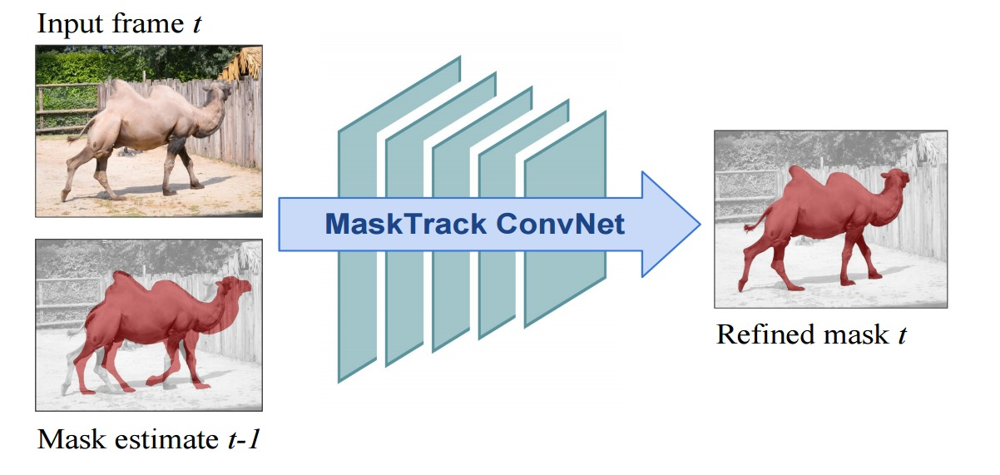
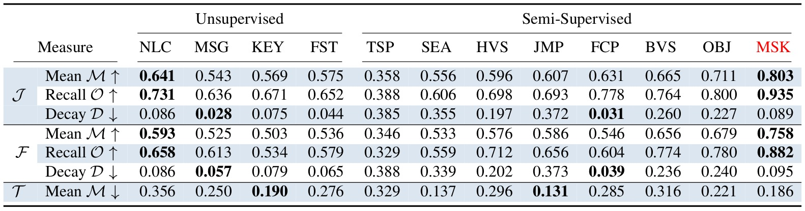

Learning Video Object Segmentation from Static Images
1,2Federico Perazzi* 3Anna Khoreva* 3Rodrigo Benenson 3Bernt Schiele 1Alexander Sorkine-Hornung
1ETH Zurich 2Disney Research Zurich 3MPI Saarbrücken

Figure 1: Given a rough mask estimate from the previous frame t − 1 , we train a convnet to provide a refined mask output for the current frame t.
Abstract
Inspired by recent advances of deep learning in instance segmentation and object tracking, we introduce video object segmentation problem as a concept of guided instance segmentation. Our model proceeds on a per-frame basis, guided by the output of the previous frame towards the object of interest in the next frame. We demonstrate that highly accurate object segmentation in videos can be enabled by using a convnet trained with static images only. The key ingredient of our approach is a combination of offline and online learning strategies, where the former serves to produce a refined mask from the previous’ frame estimate and the latter allows to capture the appearance of the specific object instance. Our method can handle different types of input annotations: bounding boxes and segments, as well as incorporate multiple annotated frames, making the system suitable for diverse applications. We obtain competitive results on three different datasets, independently from the type of input annotation.
Qualitative results and comparisons with semi-supervised state-of-the-art approaches on the DAVIS dataset.
Introduction
In this work we demonstrate that highly accurate video object segmentation can be enabled using a convnet trained with static images only. We show that a convnet designed for semantic image segmentation can be utilized to perform per-frame instance segmentation, i.e., segmentation of generic objects while distinguishing different instances of the same class. For each new video frame the network is guided towards the object of interest by feeding in the previous’ frame mask estimate. We therefore refer to our approach as guided instance segmentation. To the best of our knowledge, it represents the first fully trained approach to video object segmentation. Our system is efficient due to its feed-forward architecture and can generate high quality results in a single pass over the video, without the need for considering more than one frame at a time. This is in stark contrast to many other video segmentation approaches, which usually require global connections over multiple frames or even the whole video sequence in order to achieve coherent results. The method can handle different types of annotations and in the extreme case, even simple bounding boxes as input are sufficient, achieving competitive results, rendering our method flexible with respect to various practical applications. Key to the video segmentation quality of our approach is a combined offline / online learning strategy. In the offline phase, we use deformation and coarsening on the image masks in order to train the network to produce accurate output masks from their rough estimates. An online training phase extends ideas from previous works on object tracking to video segmentation and enables the method to be easily optimized with respect to an object of interest in a novel input video.
DAVIS Evaluation

Overall results of region similarity (J), contour accuracy (F) and temporal (in-)stability (T) for each of the tested algorithms. For rows with an upward pointing arrow higher numbers are better (e.g., mean), and vice versa for rows with downward pointing arrows (e.g., decay, instability). Our approach MSK (MaskTrack+Flow+CRF) achieves a score of 80.3 mIoU.
Results and Source Code
Segmentation Masks: [ DAVIS ] [ SegTrackV2 ] [ YoutTube-Objects ]Source Code (Matlab) and Models: [ Offline Training ] [ Online Training ]
Citation - BibTeX
Learning Video Object Segmentation from Static Images
F. Perazzi*, A. Khoreva*, R. Benenson, B. Schiele, A. Sorkine-Hornung
CVPR 2017, Honolulu, USA.
[ PDF ]
[ ArXiv ]
[ BibTeX ]